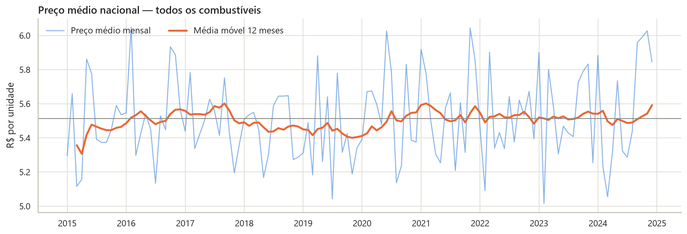

Quais estados têm combustíveis mais caros?
Ceará, Rio Grande do Sul e Santa Catarina — mas só ~6% acima do mais barato (Pará).
Projeto G1 · Análise e Visualização de Dados com Python
Dez anos de preços de gasolina, etanol, diesel, GNV e GLP em 20 estados, investigados com Pandas, Seaborn e Streamlit — e cruzados com o IPCA real do Banco Central.

Os seis indicadores exigidos pelo projeto, calculados sobre a base tratada (3.937 registros).
Combustíveis afetam transporte, logística, inflação e custo de vida. O projeto parte de uma base simulada com 4.440 registros mensais (2015–2024) e responde às perguntas orientadoras do tema.
Ceará, Rio Grande do Sul e Santa Catarina — mas só ~6% acima do mais barato (Pará).
Gasolina e etanol, cerca de +5% entre 2015 e 2024. O diesel foi o único a cair (−2,2%).
Não. O Nordeste é a região mais cara, mas a variação dentro de cada região é oito vezes maior que entre regiões.
Em meses isolados (mar/2015, nov/2022, set/2019, jul/2024), espalhados pela década, sem crise prolongada.
De forma estável em torno de R$ 5,50: muito ruído mês a mês, nenhuma tendência ou sazonalidade.
Não nesta base: correlação de −0,01 com a inflação e de 0,01 com o petróleo — indistinguíveis de zero.
GNV e etanol lideram por pouco. Todos oscilam cerca de ±4 pontos percentuais por mês.
A base não tem valores nulos, mas esconde problemas de qualidade. Cada um foi documentado e tratado no notebook.
O mesmo mês, estado e combustível aparecem repetidos com valores diferentes. Consolidados pela média: 4.440 → 3.937 registros.
Cada mês cobre só 37 das 100 combinações estado × combustível, e alguns estados têm o dobro de registros.
Inflação e petróleo deveriam ser únicos por mês, mas têm 37 valores distintos. Usamos a média mensal.
Gráficos gerados no notebook com Matplotlib e Seaborn. Toque em um gráfico para ampliar.
Dashboard Streamlit multipágina com seis filtros compartilhados. KPIs, gráficos e textos de interpretação se recalculam a cada seleção.
Um pipeline único em src/ alimenta o notebook e o dashboard: tudo parte do mesmo tratamento.
requests, com cópia localTudo o que foi entregue, aberto no GitHub.
Os preços ficaram estáveis em torno de R$ 5,50, com diferenças pequenas entre estados, regiões e combustíveis — e nenhuma relação com inflação ou petróleo. A principal descoberta é a ausência de padrão.
Sobre a base: os dados são simulados para fins didáticos. Na economia real, combustíveis acompanham petróleo, câmbio e ICMS — a comparação com o IPCA do Banco Central evidencia essa diferença. O mesmo pipeline pode ser aplicado aos dados abertos da ANP.